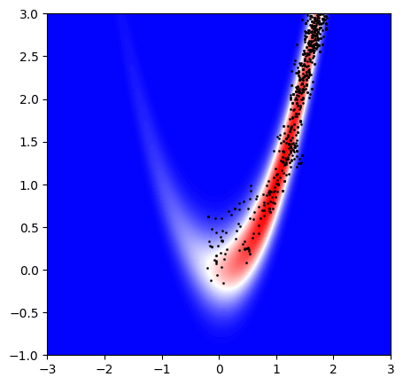

The Monte Carlo (MC) method offers a robust solution to these high-dimensional sampling challenges. By building a chain of dependent samples that collectively approximate the target distribution, MC methods can efficiently navigate high-dimensional spaces, even where standard sampling would fail. The iterative nature of MC methods enables them to focus on the regions of highest probability mass, ensuring efficient and reliable sampling in high dimensions.
The sampling from high-dimensional probability distributions is crucial for understanding complex systems, estimating parameters, or making predictions in many fields ranging from statistics and machine learning to physics and finance. In these scenarios, traditional analytical solutions become impractical due to the complexity of the probability space, and sampling provides a powerful alternative to gain insights. However, generating representative samples from these high-dimensional distributions is challenging, as the probability mass tends to concentrate in unexpected regions, making it hard to sample accurately.
In lower dimensions, simple sampling strategies like importance sampling may work well by drawing samples from an easier, known distribution and reweighting them to approximate the target distribution. However, in high dimensions, these approaches often fail due to the "curse of dimensionality", by which basic sampling techniques struggle to find representative samples in high-dimensional spaces.

My one-year MSc program will focus on validating and evaluating several state-of-the-art high-dimensional Monte Carlo sampling strategies, with the goal of providing insights into the efficiency of parallel Monte Carlo sampling methods in high-dimensional spaces.